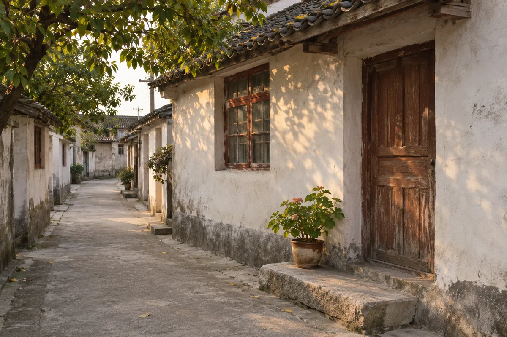
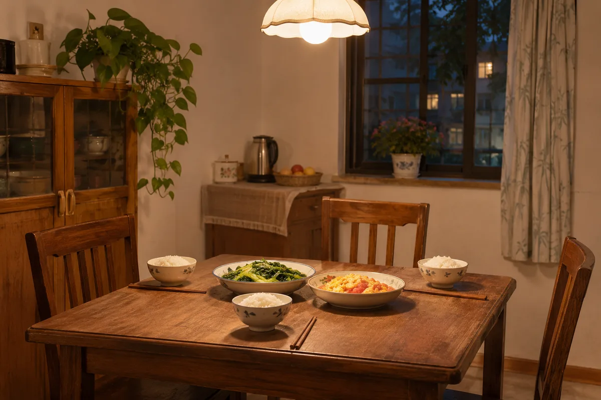

第 一 章 · 早 年 生 活
普通的一顿饭
妈做的萝卜汤，最香。灶台边总有一小碟咸菜。
晚饭常是米饭、青菜和萝卜汤，偶尔添一盘鸡蛋。奶奶坐窗边，父亲坐门边，我挨着母亲，饭前把长短相近的筷子分好。
揭开锅盖，热气升起来，等大家坐齐，才响起筷子碰碗沿的声音。我也常有坐不住的时候，惦记出去玩，没吃几口就跑。
THREE VISUAL DIRECTIONS / 2026.11
同一个产品，三种讲述方式：一本正在写下的书、一盏为讲述亮着的灯、一本会收照片的家书。每套都附首页与代表页面。
人生轨迹 · 第一章
选一个话题，小暖陪您慢慢聊。
小时候，您住的地方附近都有些什么呀？
小时候常走的那条路，现在还常想起吗？
小时候，家里一般吃些什么呀？
已 写 下 的 一 句“如今再想那条巷子，最清楚的还是回家时这几步路。”
第 一 章
说起小时候，我先想起家门前的那条窄巷。两旁的房子挨得近，巷口有一棵树，再往外是几家小铺。天热时，邻居搬着凳子出来坐，择菜、收衣服，缺什么便隔着门招呼一声。
放学回来，我把书包放下就去找伙伴，常在巷子里跑得忘了时间。听见奶奶喊吃饭，才匆匆往家赶。如今再想那条巷子，最清楚的还是回家时这几步路。
后来巷子拆了，母亲在电话里提过一次。我想起那棵树，却怎么也想不起树下的石阶有几级。
晚 上 好
不用准备，想到哪儿说到哪儿。
小暖会把您的话收好。
正 在 写 的 一 章
小时候，家里一般吃些什么呀？
小时候不忙的时候，您都爱干点什么？
常 走 的 一 条 路
小 暖
“小时候常走的那条路，
现在还记得是什么样吗？”
您 说
记得，是一条土路，两边都是梧桐树，夏天走一趟，鞋面上全是土……
录音只用于整理您的故事 · 可随时删除
您讲，我们记。讲过的，会变成一本能翻的书。

小时候，家里一般吃些什么呀？
小时候常走的那条路，现在还常想起吗？
小敏（女儿） 30 分钟前打开了《老巷里的童年》
“妈，下次讲讲巷口那棵树吧。”

第 一 章 · 早 年 生 活
晚饭常是米饭、青菜和萝卜汤，偶尔添一盘鸡蛋。奶奶坐窗边，父亲坐门边，我挨着母亲，饭前把长短相近的筷子分好。
揭开锅盖，热气升起来，等大家坐齐，才响起筷子碰碗沿的声音。我也常有坐不住的时候，惦记出去玩，没吃几口就跑。
小敏（女儿）昨天
我也记得这张桌子，汤里还放一点白胡椒。